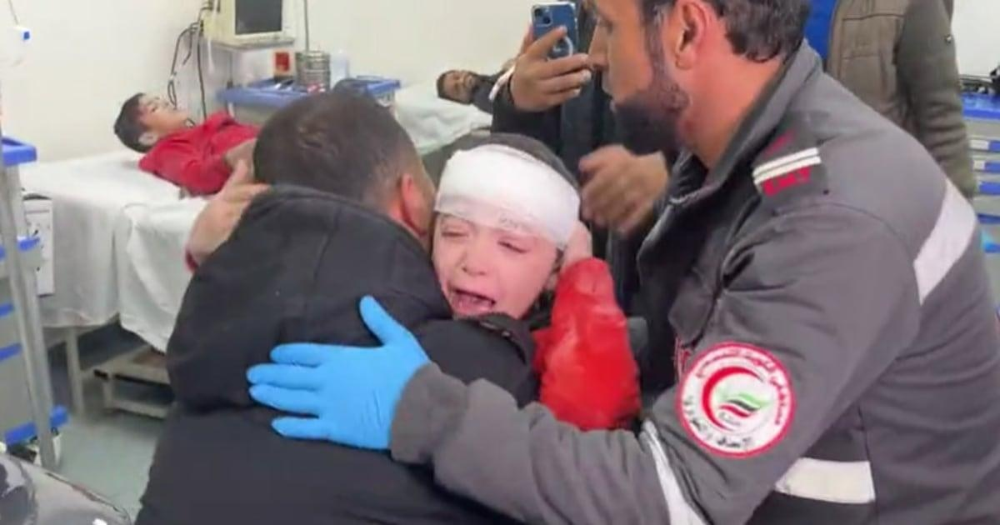

Gaza doctor breaks down in tears seeing his injured son brought into the ERThe doctor treating the victims of an Israeli bomb attack on the southern Gaza Strip city of Rafah had been examining one patient after another in the crowded emergency room when he saw him. There, amid the din of screaming children and moaning grownups, amid the cries of medical workers for more medicine and bandages, Dr. Rami Abu Libdeh spotted a paramedic carrying his 9-year-old son, Mohammad. Bursting into tears, Libdeh, 32, grabbed the boy, whose head was bandaged and whose red top was covered with a layer of dust. Holding him tightly, Libdeh asked his son repeatedly where his mother was. "Where is your mother? Where is Mom?" Libdeh asked. "Where is Moataz? Where is Moataz?" Moataz is the doctor's other son. Falling to his knees, Libdeh peppered his weeping son with more questions about his missing mother and their house before surrendering the boy to the other medics in the room for treatment. Then grimacing and fighting back fresh tears, Libdeh went out to the hospital loading area where a steady stream of ambulances bearing the still-living and the dead were arriving. An NBC News team was at the Kuwaiti Hospital when it recorded the heartbreaking father-and-son reunion. The team was there to cover the aftermath of the Israeli airstrike on Rafah on Thursday that killed 14 people, a deadly aerial assault that was launched just hours after Israeli Prime Minister Benjamin Netanyahu rejected a cease-fire offer from Hamas and vowed to expand the offensive into the southern Gaza town. More heartbreaking scenes unspooled as the NBC News team was there. The ER was jammed with dozens of children, many still trembling in fear. Other children, stunned into silence and covered with bandages, watched wide-eyed as the chaos unfolded around them. Every few minutes, more ambulances arrived in the loading area and wounded people were carried on stretchers to the left by medical workers to the emergency room, part of which is housed in a tent because the hospital can't accommodate all of the injured people inside. Those for whom there appeared to be no hope were carried to the right to a collection area where the bodies, mostly wrapped in white sheets that had red Arabic lettering on them, were laid on the ground. While the NBC News team was there, a doctor who had been checking the corpses found a baby with both eyes open and who still had a pulse. Quickly, the doctor brought the baby into the crowded ER, where he and a medical team tried to revive the child with oxygen and chest compressions. The child appeared to be wearing a blue SpongeBob SquarePants pajama top. But there was no saving the child. "That's it, that's it," one of the medical workers said. "Cover him." Minutes later, the toddler was wrapped in a white sheet and carried back to the collection area to rejoin the dead. Meanwhile, inside the ER, a frustrated father vented while an unconscious relative lay on a gurney and two children stared silently at the reporters. Before departing, the team spotted a woman dressed in a head scarf being led to an ambulance containing three bodies wrapped in sheets, one of them child-sized. Gently, she touched one of the bodies. Then she put her face in her hands and sobbed. |
 |